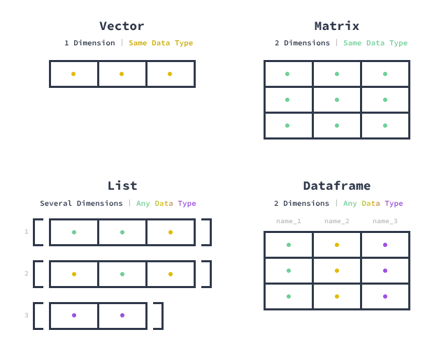

x <- 10
y <- "10"4 Veri Tipleri ve Yapıları
4.1 Veri Nedir? Değer mi, Yapı mı?
Veri analizi denildiğinde çoğu kişinin aklına sayılar, tablolar veya grafikler gelir. Ancak programlama açısından veri yalnızca “değer” değildir. R gibi bir dilde veri:
- bir değerdir (örneğin: 10, “Ali”, TRUE),
- ama aynı zamanda bir tiptir,
- ve daha önemlisi bir yapıdır.
Bu üç katman birlikte çalışır:
- Değer (value) → 10
- Tip (type) → numeric
- Yapı (structure) → vector
Bu ayrımı anlamadan yapılan analizler genellikle şu tür hatalara yol açar:
- “Neden bu işlem çalışmadı?”
- “Neden sonuç NA çıktı?”
- “Neden model farklı sonuç verdi?”
Bu soruların cevabı çoğu zaman veri tipinde gizlidir.
4.1.1 Programlama Perspektifinden Veri
Matematikte veri çoğu zaman soyuttur. Ancak bilgisayarlar soyut kavramlarla değil, somut temsillerle çalışır.
Bir bilgisayar için veri şu soruların cevabıdır:
- Bu veri bellekte nasıl saklanıyor?
- Kaç byte yer kaplıyor?
- Üzerinde hangi işlemler yapılabilir?
- Bu veri diğer verilerle nasıl etkileşir?
Bu nedenle programlama dillerinde veri, yalnızca içerik değil, aynı zamanda davranış anlamına gelir.
Bu iki değer “görünüşte” aynı olabilir. Ama R için tamamen farklıdır:
class(x) # numeric [1] "numeric"class(y) # character[1] "character"x ile matematiksel işlem yapılabilir ama y ile yapılamaz.
x + 5 # çalışır
y + 5 # hata verirBu basit örnek bile veri tipinin neden kritik olduğunu gösterir.
4.1.2 R’nin Veri Modeli: Vektörel Düşünme
R’nin diğer birçok programlama dilinden ayrıldığı temel nokta şudur:
R tek değerle değil, veri seti ile düşünür.
Bu yaklaşımın merkezinde vektör kavramı vardır.
x <- c(1, 2, 3, 4)
x + 10[1] 11 12 13 14Bu işlem aslında şuna denktir:
1+10, 2+10, 3+10, 4+10
Ama R bunu tek tek değil, tek adımda yapar.
4.1.3 Neden Vektörel Tasarım?
Bu tasarımın arkasında üç temel neden vardır:
İstatistiksel düşünce
İstatistik tek bir gözlemle değil, veri setleriyle çalışır.
- Ortalama tek sayıdan değil, veri setinden hesaplanır
- Regresyon tek noktadan değil, veri setinden kurulur
Bu yüzden R’nin doğası:
“tek değer” değil, “veri kümesi” odaklıdır
Performans
Vektörel işlemler düşük seviyede (C/Fortran) optimize edilmiştir.
# yavaş (döngü) for(i in 1:1000) { ... }
# hızlı (vektörel) x + 10Kod okunabilirliği
x <- c(1,2,3,4)
x[x > 2][1] 3 4Bu ifade ile “2’den büyükleri seç” demektir. Bu, hem matematiksel hem sezgiseldir.
4.1.4 Veri Tipi Neden Var?
Bir programlama dili veri tipleri olmadan da çalışabilir miydi? Evet. Ama:
- bellek yönetimi yapılamazdı
- hatalar kontrol edilemezdi
- performans düşerdi
- işlemler belirsiz olurdu
Bu nedenle veri tipleri:
bilgisayarın veriyle nasıl davranacağını belirler
4.1.5 Veri Tipi = Davranış
Bir veri tipi sadece “ne olduğunu” değil, “ne yapabileceğini” belirler.
x <- 10
y <- "10"x + 5 # matematiksel işlem
y + 5 # hataBu fark şunu gösterir:
Veri tipi = izin verilen işlemler kümesi
4.1.6 Sessiz Hatalar (En Tehlikelisi)
Bazı durumlarda R hata vermez, ama yanlış sonuç üretir.
x <- c(1, 2, NA, 4)
mean(x)[1] NABurada hata yok. Ama sonuç yanlış olabilir. Doğru kullanım:
mean(x, na.rm = TRUE)[1] 2.333333NA yönetimi yapılmazsa analiz yanlış olur.
4.1.7 Veri Tipi Hatalarının Gerçek Hayattaki Etkisi
Bir değişken yanlış tipteyse:
- model yanlış kurulabilir
- grafik yanlış çizilebilir
- filtreleme yanlış çalışabilir
- sonuçlar güvenilmez olur
Örneğin:
yas <- c("25", "30", "40")
mean(yas)[1] NAHata verir. Ama:
yas <- as.numeric(yas)
mean(yas)[1] 31.666674.2 Veri Tipleri: R’nin Temel Yapı Taşları
R programlama dilinde kullanılan veri tipleri, dilin veri ile nasıl çalıştığını anlamanın en temel adımlarından biridir. Çoğu kullanıcı veri tiplerini yalnızca teknik bir sınıflandırma olarak görür; ancak gerçekte veri tipi, bir değişkenin nasıl davranacağını, hangi işlemlere izin vereceğini ve hangi durumlarda hata üreteceğini belirler.
R’de kullanılan temel veri tipleri, literatürde atomic vector olarak adlandırılır. “Atomic” ifadesi burada kritik bir anlam taşır: bu tür vektörler homojendir, yani yalnızca tek bir veri tipinden oluşabilirler. Başka bir deyişle, bir atomic vector içinde bulunan tüm elemanlar aynı türdedir.
Bu tasarım, R’nin vektörel çalışma mantığıyla doğrudan ilişkilidir. R, tek bir değerle değil, veri kümeleri ile çalışacak şekilde tasarlanmıştır. Dolayısıyla veri tipleri de bu vektörel yapıya uygun olarak tanımlanmıştır.
R’de beş temel atomic veri tipi bulunmaktadır:
- numeric (ya da double): reel sayılar
- integer: tamsayılar
- complex: karmaşık sayılar
- character: metinsel ifadeler
- logical: TRUE ve FALSE değerleri
Bu sınıflandırma ilk bakışta basit görünse de, her bir veri tipi farklı davranışlara sahiptir ve veri analizi sürecinde farklı hatalara veya avantajlara yol açabilir.
Atomic Yapının Önemi
Atomic vektörlerin en önemli özelliği homojen olmalarıdır. Yani bir vektör içinde farklı veri tipleri birlikte bulunamaz. Eğer böyle bir durum oluşursa, R otomatik olarak veri tiplerini dönüştürür (coercion).
x <- c(1, 2, "3")
x[1] "1" "2" "3"Bu örnekte sayısal değerler metne dönüştürülmüştür. Bu davranış, veri kaybını önlemek için yapılan bilinçli bir tasarım tercihidir. Bu konu ilerleyen bölümlerde detaylı olarak ele alınacaktır.
Veri Tipi Nasıl Öğrenilir?
Bir nesnenin veri tipini öğrenmek için R’de farklı fonksiyonlar kullanılabilir. En yaygın kullanılan iki fonksiyon typeof() ve class() fonksiyonlarıdır.
x <- 10
typeof(x)[1] "double"class(x)[1] "numeric"Bu iki fonksiyon çoğu zaman benzer sonuçlar üretse de, aslında farklı amaçlara hizmet eder:
typeof()→ nesnenin düşük seviyeli (internal) tipini verirclass()→ nesnenin R içindeki sınıfını (davranışını) belirtir
Bu ayrım özellikle ileri düzey konularda (S3/S4 sistemleri gibi) önemli hale gelir.
Önemlitypeof ve class fonksiyonları hakkında önemli not
typeof() ve class() fonksiyonları, R programlama dilinde nesnelerin özelliklerini sorgulamak için kullanılır. Farklı amaçlara hizmet ederler ve bazı durumlarda farklı sonuçlar üretebilirler.
typeof()fonksiyonu, bir nesnenin temel veri türünü belirler. Örneğin, bir nesnenin karakter dizisi (string), sayı, liste, fonksiyon veya vektör gibi temel veri türlerinden hangisine ait olduğunu gösterir. Ancak, nesnenin özel sınıfını (class) ifade etmez. Örneğin, bir faktörüntypeof()değeri “integer” olabilir.class()fonksiyonu ise bir nesnenin özel sınıfını belirtir. Eğer bir nesne özel bir sınıfa aitse (örneğin, bir veri çerçevesi veya faktör),class()fonksiyonu bu özel sınıfın adını verir. Eğer nesne birden fazla sınıfa aitse, sınıflar bir sıra halinde listelenir.
Bu fonksiyonlar genellikle birlikte kullanılır çünkü bir nesnenin veri tipi ve sınıfı arasında farklılıklar olabilir. Örneğin, bir veri çerçevesi typeof() ile incelendiğinde list çıkabilir, çünkü veri çerçeveleri bir liste türündedir. Ancak, class() fonksiyonu bu nesnenin özel sınıfını, yani data.frame olarak gösterecektir. Bu farklılıklar, bir nesnenin hangi özelliklere sahip olduğunu daha iyi anlamak için kullanılabilir.
4.2.1 Numeric (Double) ve Integer: Sayısal Verinin İki Yüzü
R’de sayısal veriler iki temel tip altında incelenir: numeric (ya da double) ve integer. Bu iki veri tipi çoğu kullanıcı tarafından aynı kabul edilse de, aslında hem temsil biçimi hem de davranış açısından önemli farklar içerir.
4.2.1.1 Numeric (Double): Varsayılan Sayısal Tip
R’de bir sayıyı doğrudan tanımladığınızda, bu değer varsayılan olarak numeric tipinde saklanır.
x <- 10
y <- 3.14
typeof(x)[1] "double"typeof(y)[1] "double"Bu değerler aslında double precision floating-point formatında tutulur. Bu ifade ilk bakışta karmaşık görünebilir; ancak temel anlamı şudur:
Sayılar yaklaşık olarak saklanır
Çok geniş bir aralıkta değer temsil edilebilir
Ondalıklı işlemler desteklenir
Bu tasarımın arkasındaki temel motivasyon, R’nin istatistiksel hesaplamalara odaklı olmasıdır. Çünkü ortalama, varyans, regresyon gibi işlemler çoğu zaman tam sayılarla değil, ondalıklı değerlerle çalışır.
Hassasiyet Problemi: Görünmeyen Tehlike
Double tipin en önemli yan etkilerinden biri hassasiyet (precision) problemidir.
0.1 + 0.2[1] 0.3# Beklenen: 0.3
# Gerçek: 0.30000000000000004Bu durum bir hata değil, bilgisayarların sayıları ikili sistemde (binary) temsil etmesinin doğal bir sonucudur. Bu nedenle sayısal karşılaştırmalarda dikkatli olunmalıdır:
0.1 + 0.2 == 0.3[1] FALSEDaha güvenli yaklaşım:
all.equal(0.1 + 0.2, 0.3)[1] TRUEBu örnek, veri tiplerinin yalnızca saklama biçimi değil, aynı zamanda analiz sonuçları üzerinde de etkili olduğunu gösterir.
4.2.1.2 Integer: Daha Az Bellek, Daha Sınırlı Temsil
Integer veri tipi, tam sayıları temsil etmek için kullanılır.
x <- 10L
typeof(x)[1] "integer"R’de integer tanımlamak için sayının sonuna L eklenmesi gerekir. Aksi halde sayı otomatik olarak numeric (double) olarak değerlendirilir. Integer tipinin bazı avantajları vardır:
Daha az bellek kullanır
Büyük veri setlerinde performans avantajı sağlayabilir
Kesin değerler içerir (floating-point hatası yoktur)
Ancak bu avantajlara rağmen, R’de integer kullanımı sınırlıdır. Bunun temel nedeni, istatistiksel işlemlerin çoğunun ondalıklı sonuç üretmesidir.
4.2.1.3 Numeric ve Integer Arasındaki Fark
Aşağıdaki örnek, bu iki tip arasındaki farkı daha net ortaya koymaktadır:
x <- 5L
y <- 2L
x / y[1] 2.5# Sonuç: 2.5
typeof(x / y)[1] "double"Burada dikkat edilmesi gereken nokta şudur. İki integer ile işlem yapılmasına rağmen sonuç numeric (double) olmuştur. Bu, R’nin hesaplamalarda daha genel bir tipe geçme eğiliminden kaynaklanır.
4.2.1.4 Otomatik Dönüşüm (Implicit Coercion)
R, farklı sayısal tipleri birlikte kullandığında otomatik dönüşüm yapar:
x <- 5L
y <- 2.5
x + y[1] 7.5Bu işlemde integer olan x, numeric tipe dönüştürülür. Bu davranış çoğu zaman kullanıcı için avantajlıdır; ancak bazı durumlarda beklenmeyen sonuçlara yol açabilir.
4.2.1.5 Bellek Perspektifi (İleri Seviye Not)
Numeric ve integer arasındaki fark yalnızca kavramsal değildir, aynı zamanda bellekte kapladıkları alanı da etkiler:
integer → genellikle 4 byte
numeric → genellikle 8 byte
Bu fark küçük veri setlerinde önemsizdir; ancak milyonlarca gözlem içeren veri setlerinde önemli hale gelebilir.
4.2.1.6 Ne Zaman Hangisini Kullanmalı?
Pratikte şu yaklaşım benimsenebilir:
İstatistiksel hesaplamalar → numeric
Sayaçlar, indeksler → integer
Büyük veri ve performans kritikse → integer tercih edilebilir
Ancak çoğu veri analizi senaryosunda numeric kullanımı yeterlidir.
4.2.1.7 Egzersizler
numeric ve integer değişkenler oluşturup
typeof()ile inceleyiniz0.1 + 0.2 işlemini test ediniz ve sonucu yorumlayınız
integer iki sayı ile bölme işlemi yapınız ve çıkan tipin ne olduğunu gözlemleyiniz
integer ve numeric birlikte kullanıldığında hangi tipe dönüştüğünü test ediniz
4.2.1.8 Bölüm Özeti
R’de varsayılan sayısal tip numeric (double)’dır
integer daha az bellek kullanır ancak sınırlıdır
double precision hassasiyet sorunlarına yol açabilir
R işlemler sırasında daha genel tipe geçme eğilimindedir
veri tipi seçimi analiz doğruluğunu etkileyebilir
4.2.2 Character: Metin Veri ile Çalışmanın Görünmeyen Zorlukları
R’de character veri tipi, metinsel ifadeleri temsil eder. İlk bakışta oldukça basit görünür: tırnak içine alınmış her şey metindir.
isim <- "Fatih"
sehir <- "Ankara"
class(isim)[1] "character"Ancak pratikte metin veriler, veri analizinin en problemli alanlarından biridir. Çünkü metin veriler:
sayıya benzeyebilir,
yanlış tipte içeri alınabilir,
farklı encoding yapıları içerebilir,
beklenmeyen boşluklar veya karakterler barındırabilir.
Bu nedenle character veri tipi yalnızca “metin” değil, aynı zamanda veri kalitesi problemi anlamına da gelir.
4.2.2.1 Sayıya Benzeyen Metin: En Yaygın Hata
Veri setlerinde en sık karşılaşılan durumlardan biri, sayısal olması gereken bir değişkenin metin olarak saklanmasıdır.
x <- "100"
y <- "200"
# Hata verir
# x + yBu değerler matematiksel işlem yapmaya uygun değildir. Çünkü R bu verileri sayı olarak değil, metin olarak görür. Doğru kullanım:
x <- as.numeric(x)
y <- as.numeric(y)
x + y[1] 300Burada kritik nokta şudur:
Veri tipi yanlışsa, analiz yanlış başlar.
4.2.2.2 Sessiz Tehlike: Başarısız Dönüşümler
Daha tehlikeli olan durum, dönüşümün hata vermeden başarısız olmasıdır.
x <- c("10", "20", "30a")
as.numeric(x)[1] 10 20 NABurada:
“30a” değeri NA’ya dönüşmüştür
ancak R yalnızca uyarı verir, işlemi durdurmaz
Bu durum veri kaybına yol açabilir. Daha güvenli yaklaşım:
suppressWarnings(as.numeric(x))[1] 10 20 NA4.2.2.3 Boşluk ve Gizli Karakter Problemleri
Metin verilerde en sinsi hatalardan biri görünmeyen karakterlerdir.
x <- "10 "
as.numeric(x)[1] 10Bu dönüşüm çalışabilir; ancak her zaman güvenli değildir.
Özellikle veri dış kaynaklardan (CSV, Excel) geldiğinde:
başında boşluk olabilir
sonunda boşluk olabilir
görünmeyen karakterler bulunabilir
Temizleme işlemi:
x <- trimws(x)
as.numeric(x)[1] 104.2.2.4 Encoding Problemleri
Metin veriler yalnızca karakterlerden ibaret değildir; aynı zamanda encoding (kodlama) bilgisi taşır.
Örneğin:
UTF-8
Latin-1
Windows-1254
Türkçe karakterler bu noktada problem yaratabilir.
"İ", "ı", "ş", "ğ"Yanlış encoding ile:
veri bozulabilir
karakterler yanlış görünebilir
karşılaştırmalar hatalı olabilir
Bu konu özellikle veri okuma ve yazma işlemlerinde önem kazanır.
4.2.2.5 Karşılaştırma Problemleri
Metin verilerde karşılaştırma her zaman beklenildiği gibi çalışmayabilir. R büyük/küçük harfe duyarlıdır. Bu nedenle karşılaştırma yaparken:
tolower("X") == "x"[1] TRUE4.2.2.6 Egzersizler
Sayı gibi görünen metinler oluşturup
as.numeric()ile dönüştürünüzİçinde hata olan metin vektörü oluşturup NA oluşumunu gözlemleyiniz
trimws() kullanarak boşlukları temizleyiniz
Büyük/küçük harf farkını test ediniz
4.2.2.7 Bölüm Özeti
Character veri yalnızca metin değil, veri kalitesi problemidir
Sayıya benzeyen metinler hataya yol açabilir
Dönüşümler sessiz veri kaybı oluşturabilir
Encoding problemi özellikle Türkçe karakterlerde kritiktir
Metin karşılaştırmaları dikkat gerektirir
4.2.3 Logical: Karar Mekanizmasının Temeli
R’de logical veri tipi yalnızca iki değer alır: TRUE ve FALSE. İlk bakışta bu oldukça basit görünür; ancak veri analizi açısından logical yapı, programın karar verme mekanizmasının temelini oluşturur.
Birçok kullanıcı logical ifadeleri yalnızca if yapılarıyla ilişkilendirir. Oysa R’de logical veri:
- veri filtreleme,
- alt kümeleme,
- koşullu işlemler,
- model kurma süreçleri
gibi pek çok kritik işlemin merkezinde yer alır.
4.2.3.1 Mantıksal İfadeler Nasıl Oluşur?
Logical değerler genellikle karşılaştırma operatörleri ile elde edilir:
5 > 3 # TRUE[1] TRUE10 == 7 # FALSE[1] FALSE8 != 2 # TRUE[1] TRUEBu ifadeler yalnızca tek bir değer üretmekle kalmaz; vektörel olarak da çalışır. Burada her eleman için ayrı ayrı karşılaştırma yapılır.
x <- c(1, 5, 10, 15)
x > 5[1] FALSE FALSE TRUE TRUE4.2.3.2 Logical Vektörler ile Veri Seçimi
Logical yapıların en güçlü kullanım alanı veri filtrelemedir. Bu yapı şu şekilde okunabilir:
“5’ten büyük olanları seç”
Bu ifade hem matematiksel hem de oldukça sezgiseldir.
x <- c(1, 5, 10, 15)
x[x > 5][1] 10 154.2.3.3 Logical Operatörler
R’de birden fazla koşulu birleştirmek için mantıksal operatörler kullanılır:
&→ ve (AND)|→ veya (OR)!→ değil (NOT)
x <- c(1, 5, 10, 15)
x[x > 5 & x < 15] # 5’ten büyük VE 15’ten küçük olanları seç[1] 104.2.3.4 Logical ve NA Etkileşimi
Logical veri ile çalışırken en kritik konulardan biri NA değerleridir.
TRUE & NA[1] NAFALSE & NA[1] FALSEBu davranışın mantığı şudur:
TRUE & NA → sonuç bilinemez
FALSE & NA → kesinlikle FALSE
Bu durum veri filtreleme sırasında beklenmeyen sonuçlara yol açabilir.
4.2.3.5 NA İçeren Filtreleme Problemi
x <- c(10, NA, 20, 30)
x[x > 15][1] NA 20 30Burada NA değeri de sonuçta kalır. Daha güvenli yaklaşım:
x[!is.na(x) & x > 15][1] 20 30Bu ifade; önce NA değerleri dışlar sonra koşulu uygular.
4.2.3.6 Logical ve Sayısal Dönüşüm
R’de logical değerler sayıya dönüştürülebilir:
as.numeric(TRUE)[1] 1as.numeric(FALSE)[1] 0Bu özellik bazı istatistiksel hesaplamalarda kullanılabilir. Örneğin:
x <- c(1, 5, 10, 15)
mean(x > 5) # “5’ten büyük değerlerin oranı”[1] 0.54.2.3.7 Logical ile Sessiz Hatalar
Logical ifadeler bazen hata vermez ama yanlış sonuç üretir.
x <- c(10, 20, 30)
x[x > 50]numeric(0)Bu sonuç boş vektördür. Bu durum çoğu zaman fark edilmez ve analiz yanlış devam eder.
4.2.3.8 Egzersizler
Bir vektör oluşturup 10’dan büyük değerleri seçiniz
İki koşulu birlikte kullanarak filtreleme yapınız
NA içeren veri ile filtreleme deneyiniz
logical sonucu numeric’e çevirerek oran hesaplayınız
4.2.3.9 Bölüm Özeti
Logical veri yalnızca TRUE/FALSE değildir, karar mekanizmasıdır
Vektörel çalışır ve veri filtrelemede kullanılır
NA ile birlikte kullanımı dikkat gerektirir
Logical değerler sayısal analizlerde kullanılabilir
4.2.4 Complex (Karmaşık Sayılar) Üzerine Kısa Bir Not
R programlama dilinde karmaşık sayılar (complex) da bir veri tipi olarak tanımlanmıştır. Bu sayılar, reel ve sanal kısımlardan oluşur ve genellikle mühendislik, sinyal işleme ve bazı ileri matematiksel uygulamalarda kullanılır. Ancak veri analizi, istatistiksel modelleme ve günlük veri işleme süreçlerinde karmaşık sayılar çok nadiren kullanılır.
z <- 2 + 3i
z[1] 2+3i4.3 Veri Yapıları

Veri analizi yalnızca sayılarla çalışmak değildir; asıl mesele bu sayıların nasıl organize edildiğidir. Aynı veriyi farklı şekillerde düzenlemek, analiz sürecini tamamen değiştirebilir. Bu nedenle veri yapıları konusu, yalnızca teknik bir detay değil, aynı zamanda veri ile düşünmenin bir biçimidir.
Yukarıdaki görsel, R’de en sık kullanılan dört temel veri yapısını özetlemektedir: vektör, matris, liste ve veri çerçevesi. Bu yapıların her biri, verinin farklı bir şekilde organize edilmesini sağlar ve farklı problemlere çözüm sunar.
Vektörler tek boyutlu ve homojen yapılardır; yani tüm elemanları aynı veri tipine sahiptir. Matrisler bu yapının iki boyutlu halidir ve yine homojenlik korunur. Buna karşılık veri çerçeveleri (data frame), sütun bazlı düşünmeyi mümkün kılar ve her sütunda farklı veri tipleri bulunabilir. Listeler ise en esnek yapılardır; farklı veri tiplerini ve hatta farklı veri yapılarını bir arada tutabilir. Bu noktada kritik olan şudur:
Aynı veri, farklı veri yapıları içinde temsil edildiğinde farklı şekilde davranır. Örneğin bir vektör üzerinde yapılan işlem ile bir veri çerçevesi üzerinde yapılan işlem aynı değildir. Bu fark, yalnızca yazdığınız kodu değil, elde ettiğiniz sonucu da doğrudan etkiler. Bu nedenle veri yapıları konusunu öğrenmek, yalnızca yeni fonksiyonlar öğrenmek anlamına gelmez. Aksine, R’nin veriyle nasıl çalıştığını, hangi durumlarda hangi yapının tercih edilmesi gerektiğini anlamak anlamına gelir.
Bu bölümde veri yapılarına, en temel yapı olan vektörlerden başlayarak adım adım ilerleyeceğiz. Çünkü R’deki diğer birçok yapı, aslında vektörlerin farklı biçimlerde genişletilmiş halidir.
4.3.1 Vektörler
R programlama dilinde veriyle çalışırken yalnızca veri tiplerini bilmek yeterli değildir. Veri tipleri bir değerin ne türden olduğunu gösterirken, veri yapıları bu değerlerin nasıl organize edildiğini gösterir. Başka bir ifadeyle, veri tipi tek tek elemanların karakterini; veri yapısı ise bu elemanların bir araya geliş biçimini belirler.
R’de veri yapıları, dilin veri analizi için tasarlanmış olmasının doğal bir sonucudur. Çünkü istatistiksel analizler genellikle tek bir değerle değil, gözlemlerden oluşan veri kümeleriyle yapılır. Bu nedenle R’nin temel düşünme biçimi “tekil değer” değil, “birden fazla değerin düzenli biçimde saklanması ve işlenmesi” üzerine kuruludur.
En temel veri yapıları şunlardır: vektörler, listeler, matrisler, veri çerçeveleri ve tibble yapıları. Bu bölümde R’nin en temel veri yapısı olan vektörler ele alınacaktır. Vektörleri iyi anlamak, R’deki diğer veri yapılarının mantığını kavramak için zorunludur. Çünkü R’deki birçok daha karmaşık yapı, temelde vektörlerin farklı biçimlerde düzenlenmiş halidir.
Not
Vektörler R’nin en temel veri yapısıdır. Birçok kullanıcı doğrudan fark etmese de, R’de tek bir sayı bile aslında uzunluğu 1 olan bir vektör olarak düşünülebilir.
4.3.1.1 Vektör Nedir?
Vektör, aynı veri tipine sahip elemanların sıralı biçimde bir araya gelmesiyle oluşan tek boyutlu veri yapısıdır. Bu tanımda iki önemli ifade vardır: aynı veri tipi ve tek boyutluluk.
Aynı veri tipi ifadesi, vektörün homojen bir yapı olduğunu gösterir. Yani bir atomic vektörün içinde yer alan tüm elemanlar aynı veri tipinde olmak zorundadır. Tek boyutluluk ise vektörün satır-sütun yapısına sahip olmadığını, elemanların tek bir eksen boyunca sıralandığını ifade eder.
Örneğin aşağıdaki nesne sayısal bir vektördür:
# c() fonksiyonu değerleri bir araya getirerek vektör oluşturur.
# c ifadesi "combine" veya "concatenate" anlamında düşünülebilir.
v <- c(1, 4, 7, 2, 5, 8, 3, 6, 9)
v[1] 1 4 7 2 5 8 3 6 9Bu vektör dokuz elemandan oluşmaktadır. Her eleman sayısaldır. Bu nedenle v nesnesi numeric bir vektördür.
# class() nesnenin sınıfını gösterir.
class(v)[1] "numeric"# typeof() nesnenin düşük seviyeli veri tipini gösterir.
typeof(v)[1] "double"# length() vektörde kaç eleman olduğunu verir.
length(v)[1] 9Burada class() ve typeof() çıktıları benzer görünebilir; ancak aynı şey değildir. typeof() nesnenin bellekteki temel tipine daha yakındır. class() ise R’nin o nesneye nasıl davranacağını belirleyen sınıf bilgisini verir. Basit vektörlerde bu iki bilgi çoğu zaman benzer görünür; fakat tarih, faktör, veri çerçevesi gibi yapılarda aralarındaki fark daha belirgin hale gelir.
4.3.1.2 Vektörlerin Homojen Yapısı
Vektörler homojen yapılardır. Yani aynı vektör içinde farklı veri tipleri birlikte tutulamaz. Eğer farklı tipte değerler aynı vektörde bir araya getirilirse R bunları ortak bir tipe dönüştürür. Bu davranışa coercion denir.
# Sayısal değerler ve character değer birlikte yazıldığında
# R tüm elemanları character tipe dönüştürür.
karisik <- c(1, 2, "3")
karisik[1] "1" "2" "3"typeof(karisik)[1] "character"Bu örnekte 1 ve 2 sayısal gibi görünse de artık metin haline gelmiştir. Çünkü bir vektör içinde hem numeric hem character değer aynı anda atomic düzeyde tutulamaz.
Bu davranış ilk bakışta şaşırtıcı görünebilir; ancak R’nin tutarlı işlem yapabilmesi için gereklidir. Bir vektörün tüm elemanları aynı tipte olduğunda, o vektör üzerinde yapılacak işlemler daha öngörülebilir hale gelir.
Dikkat
Bir vektörde beklenmeyen şekilde character tip oluşuyorsa, genellikle vektörün içinde en az bir metinsel değer vardır. Bu durum özellikle veri okuma ve temizleme aşamalarında sık görülür.
4.3.1.3 Vektör Oluşturma
R’de vektör oluşturmanın en temel yolu c() fonksiyonudur. Ancak vektör üretimi yalnızca c() ile sınırlı değildir. Belirli düzenlere sahip vektörler üretmek için : operatörü, seq() ve rep() fonksiyonları da sık kullanılır.
4.3.1.3.1 c() Fonksiyonu ile Vektör Oluşturma
# Sayısal vektör
sayilar <- c(10, 20, 30, 40)
# Character vektör
iller <- c("Ankara", "İstanbul", "İzmir")
# Logical vektör
sonuc <- c(TRUE, FALSE, TRUE)
sayilar[1] 10 20 30 40iller[1] "Ankara" "İstanbul" "İzmir" sonuc[1] TRUE FALSE TRUEc() fonksiyonu yalnızca yeni vektör oluşturmak için değil, mevcut bir vektöre yeni eleman eklemek için de kullanılabilir.
# Mevcut vektöre yeni bir değer ekleyelim.
sayilar2 <- c(sayilar, 50)
sayilar2[1] 10 20 30 40 50Burada orijinal sayilar nesnesi değişmemiştir. Yeni değer eklenmiş hali sayilar2 adlı yeni bir nesneye atanmıştır.
sayilar[1] 10 20 30 40sayilar2[1] 10 20 30 40 50Bu ayrım önemlidir. R’de bir nesne üzerinde işlem yaptığınızda, sonucu bir nesneye atamazsanız orijinal nesne değişmeyebilir.
4.3.1.3.2 : Operatörü ile Ardışık Vektörler
Başlangıç ve bitiş değerleri belli olan basit ardışık vektörler için : operatörü kullanılabilir.
# 1'den 10'a kadar tam sayılardan oluşan vektör
v1 <- 1:10
v1 [1] 1 2 3 4 5 6 7 8 9 10Ters yönde de kullanılabilir.
# 10'dan 1'e doğru azalan vektör
v2 <- 10:1
v2 [1] 10 9 8 7 6 5 4 3 2 1: operatörü pratik ve okunabilirdir; ancak yalnızca birer birer artan veya azalan tam sayı dizileri için uygundur. Daha esnek diziler için seq() fonksiyonu kullanılır.
4.3.1.3.3 seq() Fonksiyonu ile Düzenli Diziler
seq() fonksiyonu belirli bir başlangıç, bitiş ve artış değerine göre vektör üretir.
# from: başlangıç değeri
# to : bitiş değeri
# by : artış miktarı
seq(from = 1, to = 10, by = 2)[1] 1 3 5 7 9Bu örnekte 1’den 10’a kadar ikişer artan bir vektör oluşturulmuştur.
Belirli uzunlukta bir dizi üretmek için length.out argümanı kullanılabilir.
# 0 ile 1 arasında eşit aralıklı 5 değer üretelim.
seq(from = 0, to = 1, length.out = 5)[1] 0.00 0.25 0.50 0.75 1.00Bu kullanım özellikle grafiklerde eksen değerleri üretirken, simülasyonlarda veya düzenli aralıklarla örnek noktaları oluştururken yararlıdır.
# Basit bir örnek: 0 ile 2*pi arasında 10 nokta üretelim.
x <- seq(0, 2*pi, length.out = 10)
x [1] 0.0000000 0.6981317 1.3962634 2.0943951 2.7925268 3.4906585 4.1887902
[8] 4.8869219 5.5850536 6.2831853
İpucu
: operatörü hızlı ve pratiktir; ancak seq() daha kontrollüdür. Artış miktarı, uzunluk ve yön üzerinde daha fazla kontrol gerektiğinde seq() tercih edilmelidir.
4.3.1.3.4 rep() Fonksiyonu ile Tekrarlı Vektörler
rep() fonksiyonu değerleri tekrar etmek için kullanılır. Bu fonksiyon özellikle grup etiketleri, deney tasarımları, örnek veri setleri ve simülasyonlarda çok kullanışlıdır.
# 1 değerini 5 kez tekrar edelim.
rep(1, times = 5)[1] 1 1 1 1 1Birden fazla değeri birlikte tekrar etmek de mümkündür.
# A, B ve C değerlerini 2 kez tekrar eder.
rep(c("A", "B", "C"), times = 2)[1] "A" "B" "C" "A" "B" "C"Burada tüm vektör iki kez tekrar edilmiştir. Eğer her elemanın ayrı ayrı tekrar edilmesini istersek each argümanı kullanılır.
# Her elemanı 2 kez tekrar eder.
rep(c("A", "B", "C"), each = 2)[1] "A" "A" "B" "B" "C" "C"Bu iki kullanım arasındaki fark önemlidir.
rep(c("A", "B", "C"), times = 2)[1] "A" "B" "C" "A" "B" "C"rep(c("A", "B", "C"), each = 2)[1] "A" "A" "B" "B" "C" "C"İlkinde A B C A B C sırası oluşurken, ikincisinde A A B B C C sırası oluşur. Özellikle veri seti oluştururken bu fark sonuçları doğrudan etkileyebilir.
4.3.1.4 Vektör Elemanlarına Erişim: İndeksleme
Bir vektörün belirli elemanlarına ulaşmak için köşeli parantez [] kullanılır. R’de indeksler 1’den başlar. Bu durum bazı programlama dillerinden farklıdır; örneğin Python’da indeksler 0’dan başlar.
v <- c(1, 4, 7, 2, 5, 8, 3, 6, 9)
# Birinci eleman
v[1][1] 1# Üçüncü eleman
v[3][1] 7Birden fazla eleman seçmek için indeks vektörü kullanılabilir.
# 3. ve 7. elemanları seçer.
v[c(3, 7)][1] 7 3Ardışık elemanlar için : operatörü kullanılabilir.
# 1. elemandan 6. elemana kadar seçer.
v[1:6][1] 1 4 7 2 5 8Negatif indeksler, belirtilen elemanların hariç tutulmasını sağlar.
# 2. eleman hariç tüm elemanlar
v[-2][1] 1 7 2 5 8 3 6 9Birden fazla elemanı hariç tutmak da mümkündür.
# 2. ve 5. elemanlar hariç
v[-c(2, 5)][1] 1 7 2 8 3 6 9
Dikkat
Pozitif ve negatif indeksler aynı seçim içinde birlikte kullanılmamalıdır. R, hangi elemanların seçileceği ve hangilerinin çıkarılacağı konusunda belirsizlik oluşmaması için buna izin vermez.
4.3.1.5 Mantıksal İndeksleme
R’de en güçlü seçim yöntemlerinden biri mantıksal indekslemedir. Bir koşul yazılır ve bu koşulu sağlayan elemanlar seçilir.
v <- c(1, 4, 7, 2, 5, 8, 3, 6, 9)
# 5'ten büyük olan değerleri seçelim.
v[v > 5][1] 7 8 6 9Bu kod şu şekilde okunabilir: “v vektörünün 5’ten büyük olan elemanlarını seç.”
Önce koşulun ne ürettiğine bakalım:
v > 5[1] FALSE FALSE TRUE FALSE FALSE TRUE FALSE TRUE TRUEBu ifade TRUE ve FALSE değerlerinden oluşan bir logical vektör üretir. R daha sonra TRUE olan konumlardaki değerleri seçer.
Birden fazla koşul birlikte kullanılabilir.
# 3'ten büyük ve 8'den küçük değerler
v[v > 3 & v < 8][1] 4 7 5 6Bu yapı veri analizinde filtreleme mantığının temelidir. Veri çerçevelerinde satır filtreleme, değişken seçme ve koşullu analizlerin çoğu bu mantık üzerine kuruludur.
4.3.1.6 which() Fonksiyonu: Koşulu Sağlayan Konumları Bulmak
Mantıksal indeksleme değerleri seçmek için kullanılır. Ancak bazen değerlerin kendisine değil, konumlarına ihtiyaç duyarız. Bu durumda which() fonksiyonu kullanılır.
v <- c(1, 4, 7, 2, 5, 8, 3, 6, 9)
# 5'ten büyük değerlerin konumları
which(v > 5)[1] 3 6 8 9Bu çıktı bize 5’ten büyük değerlerin vektörde hangi sırada bulunduğunu gösterir.
# Bu konumlardaki değerleri seçelim.
v[which(v > 5)][1] 7 8 6 9Bu kullanım genellikle v[v > 5] ile aynı sonucu verir; ancak which() konum bilgisinin gerekli olduğu durumlarda daha anlamlıdır.
Örneğin maksimum değerin konumunu bulmak isteyelim.
# Maksimum değerin kendisi
max(v)[1] 9# Maksimum değerin konumu
which(v == max(v))[1] 9
Not
Değerleri seçmek istiyorsanız doğrudan mantıksal indeksleme çoğu zaman yeterlidir. Konum bilgisi gerekiyorsa which() kullanmak daha uygundur.
4.3.1.7 Eksik Değerler ve is.na()
Gerçek veri setlerinde eksik değerler kaçınılmazdır. R’de eksik değerler NA ile temsil edilir. Bir vektörde eksik değer olup olmadığını kontrol etmek için is.na() fonksiyonu kullanılır.
x <- c(10, 20, NA, 40, NA)
is.na(x)[1] FALSE FALSE TRUE FALSE TRUEBu çıktı, her eleman için eksik olup olmadığını gösteren logical bir vektördür.
Eksik olmayan değerleri seçmek için !is.na() kullanılabilir.
# Eksik olmayan değerleri seçelim.
x[!is.na(x)][1] 10 20 40Eksik değerlerin kaç tane olduğunu bulmak için sum() fonksiyonu kullanılabilir. Çünkü logical değerler sayısal işlemde TRUE = 1, FALSE = 0 gibi davranır.
# Eksik değer sayısı
sum(is.na(x))[1] 2Eksik değer içeren vektörlerde bazı fonksiyonlar varsayılan olarak NA döndürür.
mean(x)[1] NABu durumda na.rm = TRUE argümanı kullanılmalıdır.
mean(x, na.rm = TRUE)[1] 23.33333Burada na.rm, “NA değerleri kaldır” anlamına gelir. Bu argüman birçok temel istatistiksel fonksiyonda bulunur.
Dikkat
na.rm = TRUE kullanmak eksik değer sorununu otomatik olarak çözmez; yalnızca hesaplama sırasında eksik değerleri dışlar. Eksik değerlerin neden oluştuğu ayrıca incelenmelidir.
4.3.1.8 Vektörel Matematiksel İşlemler
R vektörel çalışan bir dil olduğu için vektörler üzerinde matematiksel işlemler doğrudan yapılabilir.
v3 <- 1:10
v4 <- 11:20
v3 [1] 1 2 3 4 5 6 7 8 9 10v4 [1] 11 12 13 14 15 16 17 18 19 20İki vektör aynı uzunluktaysa işlemler eleman bazında yapılır.
# Eleman bazında toplama
v3 + v4 [1] 12 14 16 18 20 22 24 26 28 30# Eleman bazında bölme
v3 / v4 [1] 0.09090909 0.16666667 0.23076923 0.28571429 0.33333333 0.37500000
[7] 0.41176471 0.44444444 0.47368421 0.50000000# Daha karmaşık bir işlem
2 * v3 - v4 [1] -9 -8 -7 -6 -5 -4 -3 -2 -1 0Bu işlemler şu mantıkla çalışır: birinci eleman birinci elemanla, ikinci eleman ikinci elemanla, üçüncü eleman üçüncü elemanla işleme girer.
Bu yaklaşım R’nin istatistiksel hesaplama için ne kadar uygun tasarlandığını gösterir. Çünkü birçok analizde değişkenlerin tüm gözlemleri üzerinde aynı işlemi yapmak gerekir.
4.3.1.9 Recycling Rule: Kısa Vektörün Tekrar Kullanılması
R’de farklı uzunlukta vektörlerle işlem yapılırsa kısa olan vektör tekrar kullanılır. Bu davranışa recycling rule denir.
x <- c(1, 2, 3, 4)
y <- c(10, 20)
x + y[1] 11 22 13 24Burada y vektörü şu şekilde tekrar kullanılmıştır:
x: 1 2 3 4
y: 10 20 10 20Sonuç bu eşleşmeye göre hesaplanır.
Bu davranış bazen çok kullanışlıdır.
# Tüm elemanlara 10 eklemek de aslında recycling mantığıyla çalışır.
x + 10[1] 11 12 13 14Burada 10 değeri, vektör uzunluğu kadar tekrar edilmiş gibi düşünülür.
Ancak recycling rule dikkatli kullanılmalıdır. Eğer uzunluklar birbirinin tam katı değilse R uyarı verebilir.
x <- c(1, 2, 3, 4, 5)
y <- c(10, 20)
x + y[1] 11 22 13 24 15
Dikkat
Recycling rule R’nin güçlü ama dikkat isteyen özelliklerinden biridir. Kısa vektörün tekrar kullanılması bazı durumlarda beklenen davranış olabilir; ancak bazı durumlarda sessiz hatalara yol açabilir.
4.3.1.10 all() ve any() Fonksiyonları
Mantıksal vektörlerle çalışırken bazen tüm elemanların bir koşulu sağlayıp sağlamadığını ya da en az bir elemanın koşulu sağlayıp sağlamadığını bilmek isteriz. Bu durumda all() ve any() fonksiyonları kullanılır.
x <- c(10, 20, 30, 40)
# Tüm değerler 0'dan büyük mü?
all(x > 0)[1] TRUEall() fonksiyonu, koşul tüm elemanlar için doğruysa TRUE döndürür.
# Tüm değerler 25'ten büyük mü?
all(x > 25)[1] FALSEany() fonksiyonu ise en az bir eleman koşulu sağlıyorsa TRUE döndürür.
# En az bir değer 25'ten büyük mü?
any(x > 25)[1] TRUEBu fonksiyonlar veri kontrolünde oldukça yararlıdır.
notlar <- c(70, 80, 90, 100)
# Notların tamamı 0 ile 100 arasında mı?
all(notlar >= 0 & notlar <= 100)[1] TRUEEksik değer kontrolü için de kullanılabilir.
x <- c(10, 20, NA, 40)
# Vektörde herhangi bir eksik değer var mı?
any(is.na(x))[1] TRUEBu tür kontroller, analizden önce veri kalitesini değerlendirmek için önemlidir.
4.3.1.11 unique() ve duplicated() Fonksiyonları
Bir vektördeki benzersiz değerleri görmek için unique() fonksiyonu kullanılır.
sehir <- c("Ankara", "İstanbul", "Ankara", "İzmir", "İstanbul")
unique(sehir)[1] "Ankara" "İstanbul" "İzmir" Bu fonksiyon özellikle kategorik değişkenleri tanımak için yararlıdır. Bir veri setinde kaç farklı kategori olduğunu anlamak, analiz öncesi keşif aşamasının önemli bir parçasıdır.
Tekrarlı değerleri tespit etmek için duplicated() fonksiyonu kullanılır.
duplicated(sehir)[1] FALSE FALSE TRUE FALSE TRUEBu çıktı, her elemanın daha önce görülüp görülmediğini gösterir. İlk kez görülen değerler FALSE, tekrar edenler TRUE olur.
Tekrarlı değerleri seçmek mümkündür.
sehir[duplicated(sehir)][1] "Ankara" "İstanbul"Benzersiz değer sayısını bulmak için length() ve unique() birlikte kullanılabilir.
length(unique(sehir))[1] 3Bu işlem gerçek veri analizinde sık kullanılır. Örneğin kaç farklı il, kaç farklı ürün, kaç farklı kullanıcı veya kaç farklı kategori olduğunu bulmak için kullanılabilir.
4.3.1.12 sort() Fonksiyonu
Vektörleri sıralamak için sort() fonksiyonu kullanılır.
x <- c(5, 2, 9, 1, 7)
sort(x)[1] 1 2 5 7 9Varsayılan sıralama küçükten büyüğedir. Büyükten küçüğe sıralamak için decreasing = TRUE kullanılır.
sort(x, decreasing = TRUE)[1] 9 7 5 2 1Metinsel değerler de sıralanabilir.
isimler <- c("Zeynep", "Ali", "Mehmet", "Ayşe")
sort(isimler)[1] "Ali" "Ayşe" "Mehmet" "Zeynep"Sıralama, veri keşfi ve raporlama açısından önemlidir. Ancak sıralamanın veri tipine duyarlı olduğu unutulmamalıdır. Sayılar character olarak saklanıyorsa beklenmeyen sıralama sonuçları oluşabilir.
# Character olarak saklanan sayılar alfabetik sıralanır.
x <- c("1", "10", "2", "20")
sort(x)[1] "1" "10" "2" "20"Bu sonuç sayısal sıralama değildir. Sayısal sıralama isteniyorsa önce dönüşüm yapılmalıdır.
sort(as.numeric(x))[1] 1 2 10 204.3.1.13 Temel İstatistiksel Fonksiyonlar
Vektörler veri analizinin temel yapı taşı olduğu için birçok temel istatistiksel fonksiyon doğrudan vektörler üzerinde çalışır.
x <- c(10, 20, 30, 40, 50)
# Toplam
sum(x)[1] 150# Ortalama
mean(x)[1] 30# Medyan
median(x)[1] 30# Minimum ve maksimum
min(x)[1] 10max(x)[1] 50# Varyans ve standart sapma
var(x)[1] 250sd(x)[1] 15.81139Bu fonksiyonlar yalnızca hesaplama aracı değildir. Aynı zamanda veri hakkında hızlı bir ilk fikir edinmeyi sağlar. Örneğin ortalama merkezi eğilimi, standart sapma yayılımı, minimum ve maksimum değerler aralığı gösterir. Eksik değer varsa bu fonksiyonların davranışı değişir.
x <- c(10, 20, NA, 40, 50)
mean(x)[1] NAmean(x, na.rm = TRUE)[1] 30sd(x)[1] NAsd(x, na.rm = TRUE)[1] 18.25742Bu nedenle temel istatistiksel hesaplamalarda eksik değer kontrolü mutlaka yapılmalıdır. Daha kapsamlı bir özet için summary() fonksiyonu kullanılabilir.
summary(x) Min. 1st Qu. Median Mean 3rd Qu. Max. NA's
10.0 17.5 30.0 30.0 42.5 50.0 1 summary() fonksiyonu nesnenin yapısına göre farklı çıktılar üretir. Sayısal vektörlerde minimum, birinci çeyrek, medyan, ortalama, üçüncü çeyrek ve maksimum gibi özet istatistikleri verir.
4.3.1.14 Mini Uygulama: Bir Not Vektörünü İnceleme
Şimdi vektörlerle ilgili öğrendiğimiz kavramları küçük bir örnek üzerinde birleştirelim.
notlar <- c(45, 70, 85, 90, NA, 70, 100, 55, 30, 85)
notlar [1] 45 70 85 90 NA 70 100 55 30 85Önce vektörün temel özelliklerini inceleyelim.
# Vektörün tipi
typeof(notlar)[1] "double"# Eleman sayısı
length(notlar)[1] 10# Eksik değer var mı?
any(is.na(notlar))[1] TRUE# Eksik değer sayısı
sum(is.na(notlar))[1] 1Eksik olmayan değerleri seçelim.
notlar_temiz <- notlar[!is.na(notlar)]
notlar_temiz[1] 45 70 85 90 70 100 55 30 85Temel istatistikleri hesaplayalım.
mean(notlar_temiz)[1] 70median(notlar_temiz)[1] 70sd(notlar_temiz)[1] 22.91288min(notlar_temiz)[1] 30max(notlar_temiz)[1] 100Geçme notu 50 olsun. Geçenleri seçelim.
# 50 ve üzeri notlar
gecenler <- notlar_temiz[notlar_temiz >= 50]
gecenler[1] 70 85 90 70 100 55 85Geçen öğrenci sayısını ve oranını hesaplayalım.
length(gecenler)[1] 7length(gecenler) / length(notlar_temiz)[1] 0.7777778Tekrarlanan notları görelim.
notlar_temiz[duplicated(notlar_temiz)][1] 70 85Benzersiz notları sıralayalım.
sort(unique(notlar_temiz))[1] 30 45 55 70 85 90 100Bu örnek, vektörlerin yalnızca basit veri depolama araçları olmadığını gösterir. Vektörler üzerinde seçim, filtreleme, özetleme, eksik değer kontrolü ve temel analiz adımları doğrudan yapılabilir.
4.3.1.15 Sık Yapılan Hatalar
Vektörlerle çalışırken yapılan hataların önemli bir kısmı veri tipi, indeksleme ve eksik değer yönetimiyle ilgilidir.
İlk yaygın hata, farklı tipte değerleri aynı vektörde birleştirirken otomatik dönüşümü fark etmemektir.
x <- c(1, 2, "3")
x[1] "1" "2" "3"typeof(x)[1] "character"İkinci hata, indeksleme sırasında R’nin 1’den başladığını unutmaktır.
x <- c(10, 20, 30)
# R'de ilk eleman x[1] ile seçilir.
x[1][1] 10Üçüncü hata, eksik değerleri dikkate almadan hesaplama yapmaktır.
x <- c(10, 20, NA, 40)
mean(x)[1] NAmean(x, na.rm = TRUE)[1] 23.33333Dördüncü hata, recycling rule davranışını fark etmemektir.
x <- c(1, 2, 3, 4, 5)
y <- c(10, 20)
x + y[1] 11 22 13 24 15Beşinci hata, which() fonksiyonunu gereksiz yere kullanmaktır. Değer seçmek için çoğu zaman doğrudan logical indeksleme yeterlidir.
x <- c(5, 10, 15)
# Bu yeterlidir.
x[x > 8][1] 10 15# Konum bilgisi gerekiyorsa which() kullanılır.
which(x > 8)[1] 2 34.3.1.16 Egzersizler
Aşağıdaki egzersizler vektörlerin oluşturulması, seçilmesi, filtrelenmesi ve özetlenmesi konularını pekiştirmek için hazırlanmıştır.
c()fonksiyonunu kullanarak 8 elemanlı bir numeric vektör oluşturunuz.- Bu vektörün uzunluğunu
length()ile bulunuz. - Vektörün 2., 4. ve 6. elemanlarını seçiniz.
- Vektörden 3. elemanı hariç tutarak yeni bir seçim yapınız.
seq()fonksiyonu ile 0 ile 100 arasında 10’ar artan bir vektör oluşturunuz.rep()fonksiyonu ile"A","B"ve"C"gruplarını her biri 4 kez tekrar edecek şekilde oluşturunuz.- İçinde
NAbulunan bir vektör oluşturup eksik değer sayısını hesaplayınız. - Bir numeric vektörde 50’den büyük değerleri seçiniz.
- Bir character vektörde benzersiz değerleri bulunuz.
- Tekrarlanan değerleri
duplicated()ile tespit ediniz. - Bir numeric vektörü küçükten büyüğe ve büyükten küçüğe sıralayınız.
- Bir not vektörü için ortalama, medyan, standart sapma, minimum ve maksimum değerleri hesaplayınız.
4.3.1.17 Egzersiz Çözümleri
# 1. Numeric vektör oluşturma
x <- c(12, 45, 67, 23, 89, 34, 56, 78)
x[1] 12 45 67 23 89 34 56 78# 2. Vektör uzunluğu
length(x)[1] 8# 3. 2., 4. ve 6. elemanları seçme
x[c(2, 4, 6)][1] 45 23 34# 4. 3. elemanı hariç tutma
x[-3][1] 12 45 23 89 34 56 78# 5. seq() ile düzenli dizi üretme
seq(from = 0, to = 100, by = 10) [1] 0 10 20 30 40 50 60 70 80 90 100# 6. rep() ile grup etiketi üretme
rep(c("A", "B", "C"), each = 4) [1] "A" "A" "A" "A" "B" "B" "B" "B" "C" "C" "C" "C"# 7. NA içeren vektörde eksik değer sayısı
y <- c(10, NA, 20, 30, NA, 40)
sum(is.na(y))[1] 2# 8. 50'den büyük değerleri seçme
x[x > 50][1] 67 89 56 78# 9. Benzersiz değerleri bulma
sehir <- c("Ankara", "İstanbul", "Ankara", "İzmir", "İstanbul")
unique(sehir)[1] "Ankara" "İstanbul" "İzmir" # 10. Tekrarlanan değerleri tespit etme
duplicated(sehir)[1] FALSE FALSE TRUE FALSE TRUEsehir[duplicated(sehir)][1] "Ankara" "İstanbul"# 11. Sıralama
sort(x)[1] 12 23 34 45 56 67 78 89sort(x, decreasing = TRUE)[1] 89 78 67 56 45 34 23 12# 12. Temel istatistiksel özet
notlar <- c(45, 70, 85, 90, 70, 100, 55, 30, 85)
mean(notlar)[1] 70median(notlar)[1] 70sd(notlar)[1] 22.91288min(notlar)[1] 30max(notlar)[1] 1004.3.1.18 Bölüm Özeti
Vektörler R’nin en temel veri yapısıdır. Aynı veri tipine sahip elemanları tek boyutlu bir yapı içinde saklarlar. Vektörler sayesinde R, işlemleri tek tek elemanlara komut vermeden, doğrudan veri kümesi üzerinde gerçekleştirebilir. Bu, R’nin istatistiksel hesaplama için güçlü ve doğal bir dil olmasının temel nedenlerinden biridir.
Bu bölümde vektör oluşturma, indeksleme, mantıksal seçim, eksik değer kontrolü, sıralama, benzersiz değerleri bulma, tekrarlı değerleri tespit etme ve temel istatistiksel özetleme işlemleri ele alındı. Ayrıca seq(), rep(), all(), any(), unique(), duplicated(), sort(), is.na() ve which() gibi fonksiyonlar ayrı bir liste halinde değil, vektörlerle çalışma mantığının doğal parçaları olarak kullanıldı.
Vektörleri iyi anlamak, R’de matris, liste, veri çerçevesi ve tibble gibi daha karmaşık veri yapılarının anlaşılması için güçlü bir temel oluşturur.
4.3.2 Matrisler: Vektörün İki Boyutlu Hali
Vektörler tek boyutlu veri yapılarıdır. Ancak birçok veri problemi yalnızca tek bir eksen üzerinden değil, iki boyutlu bir yapı üzerinden düşünülmeyi gerektirir. Örneğin bir tablo, bir veri seti ya da bir görüntü verisi satır ve sütun ilişkisi içerir.
Bu noktada matrisler devreye girer.
Bir matris, aynı veri tipine sahip elemanların satır ve sütunlar halinde düzenlenmesiyle oluşan iki boyutlu bir veri yapısıdır. Bu tanımda iki önemli özellik korunur:
- Homojenlik (tüm elemanlar aynı tipte)
- Düzenli yapı (satır ve sütun organizasyonu)
Bu açıdan matrisler, vektörlerin iki boyutlu olarak genişletilmiş hali gibi düşünülebilir.
4.3.2.1 Matris Oluşturma
R’de matris oluşturmak için en temel fonksiyon matrix() fonksiyonudur.
# 1'den 6'ya kadar olan sayılarla 2 satırlı bir matris oluşturalım
m <- matrix(1:6, nrow = 2)
m [,1] [,2] [,3]
[1,] 1 3 5
[2,] 2 4 6Bu çıktıda dikkat edilmesi gereken önemli bir nokta vardır. R, matrisi varsayılan olarak sütun sütun doldurur. Yani aşağıdaki şekilde bir yerleşim oluşur.
1 3 5
2 4 64.3.2.2 Satır Bazlı Doldurma
Eğer matrisi satır bazlı doldurmak istersek byrow = TRUE kullanılır.
m2 <- matrix(1:6, nrow = 2, byrow = TRUE)
m2 [,1] [,2] [,3]
[1,] 1 2 3
[2,] 4 5 6Bu sefer aşağıdaki şekilde bir yapı oluşur.
1 2 3
4 5 64.3.2.3 Matris Boyutları
Bir matrisin boyutlarını öğrenmek için dim() fonksiyonu kullanılır.
dim(m2)[1] 2 3İlk değer satır, ikinci değer ise sütun sayısını gösterir.
4.3.2.4 Elemanlara Erişim
Matrislerde indeksleme iki boyutludur:
# 1. satır, 2. sütun
m2[1, 2][1] 2# 2. satırın tamamı
m2[2, ][1] 4 5 6# 1. sütunun tamamı
m2[, 1][1] 1 44.3.2.5 Vektör ve Matris İlişkisi
Matrisler aslında vektörlerin yeniden şekillendirilmiş halidir.
v <- 1:6
matrix(v, nrow = 2) [,1] [,2] [,3]
[1,] 1 3 5
[2,] 2 4 6Bu, önemli bir içgörü sağlar:
Matris = vektör + boyut bilgisi
4.3.2.6 Matris Üzerinde İşlemler
Matrisler üzerinde matematiksel işlemler vektörlerde olduğu gibi çalışır. İşlemler yine eleman bazında yapılır.
m <- matrix(1:4, nrow = 2)
m2 <- matrix(5:8, nrow = 2)
m + m2 [,1] [,2]
[1,] 6 10
[2,] 8 124.3.2.7 Gerçek Matris Çarpımı
Burada kritik bir ayrım vardır.
# Eleman bazlı çarpım
m * m2 [,1] [,2]
[1,] 5 21
[2,] 12 32Bu işlem klasik matris çarpımı değildir. Gerçek matris çarpımı için %*% operatörü kullanılır. Bu ayrım özellikle lineer cebir ve modelleme açısından çok önemlidir.
m %*% m2 [,1] [,2]
[1,] 23 31
[2,] 34 464.3.2.8 Homojenlik Kısıtı
Matrisler de vektörler gibi homojen yapılardır.
matrix(c(1, 2, "a", 4), nrow = 2) [,1] [,2]
[1,] "1" "a"
[2,] "2" "4" Bu durumda tüm değerler character’a dönüşür.
4.3.2.9 Sık Yapılan Hatalar
# Beklenmeyen doldurma yönü
matrix(1:6, nrow = 2) [,1] [,2] [,3]
[1,] 1 3 5
[2,] 2 4 6# eleman bazlı çarpımı matris çarpımı sanmak
m * m2 [,1] [,2]
[1,] 5 21
[2,] 12 32# farklı tipte veri kullanmak
matrix(c(1, "a"), nrow = 1) [,1] [,2]
[1,] "1" "a" 4.3.2.10 Egzersizler
1’den 12’ye kadar sayılarla 3x4 boyutunda matris oluşturunuz
Aynı matrisi
byrow = TRUEile tekrar oluşturunuz2 ve 3. sütunu seçiniz
İki matris oluşturup hem
*hem%*%ile çarpınız ve farkı inceleyinizCharacter içeren bir matris oluşturup tip dönüşümünü gözlemleyiniz
4.3.2.11 Bölüm Özeti
Matrisler, vektörlerin iki boyutlu hale getirilmiş formudur. Homojen yapıları sayesinde matematiksel işlemler için oldukça uygundur. Ancak eleman bazlı işlemler ile gerçek matris işlemlerinin ayrımı dikkatle yapılmalıdır. Matrisleri anlamak, özellikle lineer cebir temelli analizler ve modelleme süreçlerinde kritik bir rol oynar.
4.3.3 Listeler: R’nin En Esnek Veri Yapısı
Vektörler ve matrisler homojen yapılardır. Yani bu yapılarda yer alan tüm elemanların aynı veri tipinde olması gerekir. Bu durum, matematiksel işlemler açısından avantaj sağlasa da, gerçek veri problemlerinde önemli bir kısıt oluşturur. Çünkü gerçek hayattaki veriler çoğu zaman homojen değildir.
Örneğin bir öğrenciye ait veri düşündüğümüzde:
- adı (character),
- yaşı (numeric),
- notları (numeric vektör),
- başarı durumu (logical)
gibi farklı veri tipleri birlikte bulunur. Bu tür durumlarda vektör ya da matris yeterli olmaz. İşte bu noktada listeler devreye girer.
4.3.3.1 Liste Nedir?
Liste, farklı veri tiplerini ve hatta farklı veri yapılarını bir arada tutabilen esnek bir veri yapısıdır.
Yani bir liste içinde:
- sayılar,
- metinler,
- vektörler,
- matrisler,
- hatta başka listeler
birlikte bulunabilir. Bu özelliği sayesinde listeler, R’deki en genel ve en esnek veri yapısıdır.
4.3.3.2 Liste Oluşturma
Listeler list() fonksiyonu ile oluşturulur.
l <- list(
isim = "Ali",
yas = 25,
notlar = c(70, 80, 90),
gecti_mi = TRUE
)
l$isim
[1] "Ali"
$yas
[1] 25
$notlar
[1] 70 80 90
$gecti_mi
[1] TRUEBu yapı dikkatlice incelendiğinde, her elemanın farklı bir veri tipine sahip olduğu görülür.
# Listenin yapısını inceleyelim
str(l)List of 4
$ isim : chr "Ali"
$ yas : num 25
$ notlar : num [1:3] 70 80 90
$ gecti_mi: logi TRUEstr() fonksiyonu, listenin iç yapısını anlamak için en önemli araçlardan biridir. Özellikle karmaşık veri yapıları ile çalışırken mutlaka kullanılması gerekir.
4.3.3.3 Listeye Erişim: Kritik Fark
Listelerde veri seçimi vektörlerden farklıdır ve bu fark çok önemlidir. İki farklı erişim yöntemi vardır:
[]→ alt yapı (sublist) döndürür[[]]→ doğrudan değeri döndürür
# Alt liste döner
l[1]$isim
[1] "Ali"# Değer döner
l[[1]][1] "Ali"Bu fark ilk başta küçük gibi görünse de, özellikle veri manipülasyonu sırasında kritik hale gelir.
# İsim bilgisine erişelim
l$isim[1] "Ali"l[["isim"]][1] "Ali"$ operatörü, isimlendirilmiş listelerde oldukça kullanışlıdır ve okunabilirliği artırır.
4.3.3.4 Liste İçinde Liste
Listelerin en güçlü özelliklerinden biri, iç içe (nested) yapılar oluşturabilmesidir.
l2 <- list(
ogrenci1 = list(isim = "Ali", not = 80),
ogrenci2 = list(isim = "Ayşe", not = 90)
)
l2$ogrenci1
$ogrenci1$isim
[1] "Ali"
$ogrenci1$not
[1] 80
$ogrenci2
$ogrenci2$isim
[1] "Ayşe"
$ogrenci2$not
[1] 90Bu yapı, daha karmaşık veri organizasyonları için temel oluşturur.
# İç içe veri erişimi
l2$ogrenci1$not[1] 80Bu tür yapılar özellikle:
JSON veriler,
API çıktıları,
karmaşık veri setleri
ile çalışırken çok yaygındır.
4.3.3.5 Liste vs Vektör: Temel Fark
Bu farkı net görmek için basit bir karşılaştırma yapalım:
v <- c(1, 2, 3)
l <- list(1, 2, 3)
v[1] 1 2 3l[[1]]
[1] 1
[[2]]
[1] 2
[[3]]
[1] 3Görünüşte benzer olabilirler, ancak davranışları farklıdır:
# Vektör elemanları numeric
typeof(v)[1] "double"# Liste elemanları bağımsız
typeof(l)[1] "list"Vektörde tüm elemanlar aynı tipteyken, listede her eleman kendi tipini korur.
4.3.3.6 Liste Üzerinde İşlemler
Listeler üzerinde doğrudan matematiksel işlemler yapılamaz.
# Bu hata verir
# l + 1Çünkü liste bir veri koleksiyonudur, matematiksel bir yapı değildir. Ancak liste içindeki elemanlar üzerinde işlem yapılabilir.
# Notlar üzerinde işlem
l$notlar + 10numeric(0)Bu durum şunu gösterir. Liste, veriyi tutar; işlem eleman üzerinde yapılır.
4.3.3.7 Listeyi Vektöre Dönüştürme
Bazı durumlarda listeyi düzleştirerek vektöre çevirmek gerekebilir.
unlist(l)[1] 1 2 3Bu işlem tüm elemanları tek bir vektörde birleştirir. Ancak bu işlem sırasında veri tipi dönüşümü olabilir.
4.3.3.8 Sık Yapılan Hatalar
# [] ve [[]] farkını karıştırmak
l[1][[1]]
[1] 1l[[1]][1] 1# listeyi vektör sanmak
#l + 1
# unlist sonrası veri tipi değişimi
unlist(l)[1] 1 2 34.3.3.9 Egzersizler
İçinde en az 4 farklı veri tipi bulunan bir liste oluşturunuz
Liste elemanlarına hem
[]hem[[]]ile erişiniz ve farkı gözlemleyinizİç içe (nested) bir liste oluşturup veri çekiniz
Liste içindeki numeric vektör üzerinde işlem yapınız
Listeyi
unlist()ile vektöre çeviriniz ve veri tipini inceleyiniz
4.3.3.10 Bölüm Özeti
Listeler, R’de farklı veri tiplerini ve farklı veri yapılarını bir arada tutabilen en esnek veri yapısıdır. Bu özellikleri sayesinde karmaşık veri setlerini temsil etmek için vazgeçilmezdir. Ancak bu esneklik, beraberinde dikkat edilmesi gereken noktaları da getirir. Özellikle veri erişim yöntemleri ([] vs [[]]) ve veri tipi dönüşümleri iyi anlaşılmalıdır. Listeleri doğru anlamak, veri çerçeveleri ve daha ileri veri yapıları ile çalışmanın temelini oluşturur.
4.3.4 Data Frame: R’de Tablo Mantığının Temeli
4.3.4.1 Data Frame Neden Önemlidir?
R’de veri analizi denildiğinde pratikte en sık karşılaşılan yapı data frame yapısıdır. Çünkü gerçek veri setleri çoğu zaman tek bir vektörden veya tek tip değerlerden oluşmaz. Bir veri setinde aynı anda metinsel, sayısal, mantıksal ve kategorik değişkenler bulunabilir.
Örneğin bir öğrenci veri setini düşünelim. Bu veri setinde öğrencinin adı metinsel bir değişkendir, yaşı sayısal olabilir, sınav notu sayısal olabilir, dersten geçip geçmediği mantıksal olarak tutulabilir. Bu değişkenlerin hepsi aynı veri setinin parçasıdır; ancak veri tipleri aynı değildir.
Vektörler ve matrisler homojen yapılardır. Yani tüm elemanları aynı veri tipinde olmak zorundadır. Bu nedenle karma veri tiplerinden oluşan gerçek veri tablolarını temsil etmek için uygun değildir. Data frame tam olarak bu ihtiyaca cevap verir.
Bir data frame, aynı uzunluktaki vektörlerin sütunlar halinde bir araya gelmesiyle oluşan iki boyutlu bir veri yapısıdır. Bu tanım önemlidir: data frame satır ve sütunlardan oluşur; ancak her sütun kendi içinde bir vektördür. Dolayısıyla her sütun tek bir veri tipine sahipken, farklı sütunlar farklı veri tiplerinde olabilir.
Bu nedenle data frame yapısı, istatistiksel veri analizinin doğal tablosal veri biçimidir.
Not
Data frame yapısını anlamanın en kolay yolu şudur: Her sütun bir vektördür; bu vektörler yan yana gelerek tabloyu oluşturur.
Data frame yapısı, aslında sütunlardan oluşan özel bir liste olarak da düşünülebilir. Bu nedenle data frame ile list yapıları arasında güçlü bir ilişki vardır.
4.3.4.2 Data Frame ile Matris Arasındaki Temel Fark
Data frame ve matris ilk bakışta benzer görünebilir. İkisi de satır ve sütunlardan oluşur. Ancak aralarındaki temel fark veri tipi yapısındadır.
Matrisler homojendir; yani tüm elemanlar aynı veri tipinde olmak zorundadır. Data frame ise sütun bazında homojendir. Bir sütunun tüm elemanları aynı tiptedir; ancak farklı sütunlar farklı tiplerde olabilir.
# Matris örneği: tüm elemanlar aynı veri tipindedir.
m <- matrix(1:6, nrow = 2)
m [,1] [,2] [,3]
[1,] 1 3 5
[2,] 2 4 6typeof(m)[1] "integer"Şimdi aynı yapıya metinsel bir değer ekleyelim.
# Matrise character bir değer eklenirse tüm değerler character'a dönüşür.
m2 <- matrix(c(1, 2, 3, "A"), nrow = 2)
m2 [,1] [,2]
[1,] "1" "3"
[2,] "2" "A" typeof(m2)[1] "character"Bu durum matrislerin karma veri tipleri için uygun olmadığını gösterir. Data frame ise bu konuda daha esnektir.
# Data frame içinde farklı sütunlar farklı veri tiplerinde olabilir.
df <- data.frame(
isim = c("Ali", "Ayşe", "Mehmet"),
yas = c(25, 30, 28),
not = c(70, 85, 60),
gecti_mi = c(TRUE, TRUE, TRUE)
)
dfBu veri setinde isim character, yas ve not numeric, gecti_mi ise logical tiptedir. Buna rağmen hepsi aynı data frame içinde düzenli biçimde tutulabilir.
4.3.4.3 Data Frame Oluşturma
R’de data frame oluşturmak için data.frame() fonksiyonu kullanılır. Bu fonksiyona verilen her argüman data frame’in bir sütununu oluşturur.
ogrenci <- data.frame(
isim = c("Ali", "Ayşe", "Mehmet", "Zeynep"),
yas = c(21, 22, 20, 23),
not = c(75, 88, 45, 92)
)
ogrenciBurada üç sütun vardır: isim, yas ve not. Her sütun aynı uzunlukta olmalıdır. Çünkü data frame satır bazlı bir yapıdır ve her satır bir gözleme karşılık gelir.
# Data frame'in boyutunu görelim.
dim(ogrenci)[1] 4 3# Satır sayısı
nrow(ogrenci)[1] 4# Sütun sayısı
ncol(ogrenci)[1] 3dim() fonksiyonu satır ve sütun sayısını birlikte verir. nrow() yalnızca satır sayısını, ncol() ise yalnızca sütun sayısını verir.
Dikkat
Bir data frame oluştururken sütun uzunluklarının uyumlu olması gerekir. Aksi halde R hata verir veya bazı durumlarda kısa vektörü tekrar kullanmaya çalışabilir. Bu davranış, beklenmeyen veri setleri oluşturmanıza yol açabilir.
4.3.4.4 Data Frame’in Yapısını İnceleme
Bir data frame ile çalışırken ilk yapılması gereken iş, veri setinin yapısını incelemektir. Bu aşamada amaç yalnızca veriye bakmak değildir; sütun tiplerini, gözlem sayısını, eksik değerleri ve genel yapıyı anlamaktır.
# str() data frame'in yapısını gösterir.
str(ogrenci)'data.frame': 4 obs. of 3 variables:
$ isim: chr "Ali" "Ayşe" "Mehmet" "Zeynep"
$ yas : num 21 22 20 23
$ not : num 75 88 45 92str() fonksiyonu data frame’in kaç gözlemden ve kaç değişkenden oluştuğunu, her sütunun adını ve veri tipini gösterir. Bu nedenle yeni bir veri setiyle çalışırken en faydalı fonksiyonlardan biridir.
# İlk satırları görüntüleme
head(ogrenci)# Son satırları görüntüleme
tail(ogrenci)Küçük veri setlerinde tüm tabloya bakmak mümkündür. Ancak gerçek veri setleri binlerce ya da milyonlarca satır içerebilir. Bu durumda head() ve tail() fonksiyonları veri setine hızlıca göz atmak için kullanılır.
# Sütun adlarını görmek için
names(ogrenci)[1] "isim" "yas" "not" # Alternatif olarak colnames()
colnames(ogrenci)[1] "isim" "yas" "not" # Satır adları
rownames(ogrenci)[1] "1" "2" "3" "4"names() veya colnames() sütun adlarını verir. Veri analizinde sütun adları çok önemlidir; çünkü fonksiyonların çoğu sütun isimleri üzerinden çalışır.
4.3.4.5 Data Frame’de Sütun Seçme
Data frame’den sütun seçmenin birden fazla yolu vardır. Her yöntemin kullanım amacı ve davranışı biraz farklıdır.
# $ operatörü ile sütun seçme
ogrenci$not[1] 75 88 45 92$ operatörü okunabilir ve pratik bir yöntemdir. Özellikle etkileşimli çalışırken sık kullanılır.
# Çift köşeli parantez ile sütun seçme
ogrenci[["not"]][1] 75 88 45 92[[ ]] yapısı sütunun kendisini vektör olarak döndürür. Sütun adı bir karakter nesnesi olarak tutuluyorsa bu yöntem özellikle kullanışlıdır.
degisken <- "not"
ogrenci[[degisken]][1] 75 88 45 92Tek köşeli parantez kullanıldığında sonuç data frame olarak kalabilir.
# Tek sütun seçilse bile data frame yapısı korunur.
ogrenci["not"]Bu üç yöntemin farkı önemlidir:
$pratik sütun erişimi sağlar.[[ ]]sütunu vektör olarak döndürür.[ ]data frame yapısını korur.
Not
Bir sütunu analiz fonksiyonuna vektör olarak vermek istiyorsanız çoğu zaman $ veya [[ ]] uygundur. Data frame yapısını korumak istiyorsanız [ ] tercih edilebilir.
4.3.4.6 Satır ve Sütun İndeksleme
Data frame iki boyutlu bir yapı olduğu için indeksleme [satır, sütun] mantığıyla yapılır.
# 1. satır, 2. sütun
ogrenci[1, 2][1] 21Belirli satırlar seçilebilir.
# İlk iki satır
ogrenci[1:2, ]Belirli sütunlar seçilebilir.
# isim ve not sütunları
ogrenci[, c("isim", "not")]Hem satır hem sütun birlikte seçilebilir.
# İlk iki öğrencinin isim ve not bilgisi
ogrenci[1:2, c("isim", "not")]Burada virgülün sol tarafı satırları, sağ tarafı sütunları ifade eder. Eğer satır tarafı boş bırakılırsa tüm satırlar, sütun tarafı boş bırakılırsa tüm sütunlar seçilir.
4.3.4.7 Koşula Göre Satır Seçme
Data frame’lerde en yaygın işlemlerden biri belirli koşulları sağlayan satırları seçmektir. Bu işlem, vektörlerdeki mantıksal indeksleme mantığına dayanır.
# Notu 70 ve üzeri olan öğrencileri seçelim.
ogrenci[ogrenci$not >= 70, ]Burada ogrenci$not >= 70 ifadesi logical bir vektör üretir.
ogrenci$not >= 70[1] TRUE TRUE FALSE TRUER, bu logical vektörde TRUE olan satırları seçer.
Birden fazla koşul birlikte kullanılabilir.
# Notu 70 ve üzeri olan ve yaşı 22'den büyük olmayan öğrenciler
ogrenci[ogrenci$not >= 70 & ogrenci$yas <= 22, ]Bu kullanım veri filtrelemenin temelidir. İleri düzey paketlerde kullanılan filter() gibi fonksiyonların arkasındaki mantık da esas olarak budur.
4.3.4.8 Yeni Sütun Oluşturma
Data frame üzerinde en sık yapılan işlemlerden biri mevcut değişkenlerden yeni değişken üretmektir.
# Öğrencinin geçip geçmediğini gösteren yeni bir sütun oluşturalım.
ogrenci$durum <- ifelse(ogrenci$not >= 50, "Geçti", "Kaldı")
ogrenciBurada ifelse() fonksiyonu vektörel çalışır. Her öğrencinin notunu kontrol eder ve koşula göre “Geçti” veya “Kaldı” değerini üretir.
Yeni sütunlar mevcut sütunlardan matematiksel işlemlerle de üretilebilir.
# Notu 100 üzerinden 4'lük sisteme kabaca dönüştürelim.
ogrenci$not_4luk <- ogrenci$not / 25
ogrenciBu tür işlemler veri hazırlama sürecinin önemli bir parçasıdır. Analizden önce çoğu zaman ham değişkenlerden yeni analitik değişkenler üretilir.
4.3.4.9 Sütun Adlarını Değiştirme
Sütun adları veri analizi sürecinde önemlidir. Anlaşılır sütun adları, kodun okunabilirliğini artırır.
df2 <- ogrenci
names(df2)[1] "isim" "yas" "not" "durum" "not_4luk"Tüm sütun adları birlikte değiştirilebilir.
names(df2) <- c("ad", "yas", "sinav_notu", "durum", "not_4luk")
df2Belirli bir sütun adı da değiştirilebilir.
names(df2)[names(df2) == "ad"] <- "isim"
names(df2)[1] "isim" "yas" "sinav_notu" "durum" "not_4luk" Sütun adlarını değiştirirken dikkatli olmak gerekir. Çünkü yanlış adlandırma sonraki kodların çalışmamasına yol açabilir.
4.3.4.10 Satır ve Sütun Silme
Bir sütunu silmek için ilgili sütuna NULL atanabilir.
df3 <- ogrenci
# not_4luk sütununu silelim.
df3$not_4luk <- NULL
df3Belirli sütunları seçerek de yeni bir data frame oluşturulabilir.
# Yalnızca isim, yas ve not sütunlarını koruyalım.
df4 <- ogrenci[, c("isim", "yas", "not")]
df4Satır silme işlemi genellikle koşula göre seçim yaparak gerçekleştirilir.
# Notu 50 ve üzerinde olan satırları seçelim.
ogrenci[ogrenci$not >= 50, ]Burada silme yerine seçim mantığı kullanmak daha güvenli ve okunabilir bir yaklaşımdır.
4.3.4.11 Eksik Değerlerle Çalışma
Gerçek veri setlerinde eksik değerler yaygındır. Data frame içinde eksik değerleri kontrol etmek için is.na() kullanılabilir.
veri <- data.frame(
isim = c("Ali", "Ayşe", "Mehmet", "Zeynep"),
yas = c(21, NA, 20, 23),
not = c(75, 88, NA, 92)
)
veriEksik değerlerin nerede olduğunu görelim.
is.na(veri) isim yas not
[1,] FALSE FALSE FALSE
[2,] FALSE TRUE FALSE
[3,] FALSE FALSE TRUE
[4,] FALSE FALSE FALSEToplam eksik değer sayısı hesaplanabilir.
sum(is.na(veri))[1] 2Sütun bazında eksik değer sayısı için colSums() kullanılabilir.
colSums(is.na(veri))isim yas not
0 1 1 Eksik değer içeren satırlar complete.cases() ile tespit edilebilir.
complete.cases(veri)[1] TRUE FALSE FALSE TRUEEksik değer içermeyen satırları seçelim.
veri_tam <- veri[complete.cases(veri), ]
veri_tamEksik değerleri silmek her zaman doğru çözüm değildir. Bazı durumlarda eksik değerlerin neden oluştuğunu anlamak daha önemlidir. Ancak temel düzeyde complete.cases() veri setinde tam gözlemleri seçmek için kullanışlıdır.
Dikkat
Eksik değer içeren satırları doğrudan silmek veri kaybına yol açabilir. Silme işlemi yapılmadan önce eksikliğin nedeni, oranı ve hangi değişkenlerde yoğunlaştığı incelenmelidir.
4.3.4.12 Data Frame’e Satır ve Sütun Ekleme
Yeni sütun ekleme işlemini daha önce görmüştük. Yeni satır eklemek için rbind() kullanılabilir.
yeni_ogrenci <- data.frame(
isim = "Can",
yas = 24,
not = 68,
durum = "Geçti",
not_4luk = 68 / 25
)
ogrenci2 <- rbind(ogrenci, yeni_ogrenci)
ogrenci2Sütun eklemek için cbind() kullanılabilir; ancak pratikte doğrudan $ ile yeni sütun oluşturmak çoğu zaman daha okunabilir ve güvenlidir.
ogrenci2$mezun_mu <- c(FALSE, FALSE, FALSE, FALSE, FALSE)
ogrenci2rbind() ve cbind() kullanırken sütun adları, veri tipleri ve uzunluklar uyumlu olmalıdır. Aksi halde beklenmeyen sonuçlar ortaya çıkabilir.
4.3.4.13 Data Frame’i Özetleme
Data frame hakkında hızlı bilgi almak için bazı temel fonksiyonlar sık kullanılır.
# Genel yapı
str(ogrenci)'data.frame': 4 obs. of 5 variables:
$ isim : chr "Ali" "Ayşe" "Mehmet" "Zeynep"
$ yas : num 21 22 20 23
$ not : num 75 88 45 92
$ durum : chr "Geçti" "Geçti" "Kaldı" "Geçti"
$ not_4luk: num 3 3.52 1.8 3.68# Özet istatistikler
summary(ogrenci) isim yas not durum
Length:4 Min. :20.00 Min. :45.0 Length:4
Class :character 1st Qu.:20.75 1st Qu.:67.5 Class :character
Mode :character Median :21.50 Median :81.5 Mode :character
Mean :21.50 Mean :75.0
3rd Qu.:22.25 3rd Qu.:89.0
Max. :23.00 Max. :92.0
not_4luk
Min. :1.80
1st Qu.:2.70
Median :3.26
Mean :3.00
3rd Qu.:3.56
Max. :3.68 # Boyut bilgisi
dim(ogrenci)[1] 4 5# Satır ve sütun sayısı
nrow(ogrenci)[1] 4ncol(ogrenci)[1] 5# Sütun adları
names(ogrenci)[1] "isim" "yas" "not" "durum" "not_4luk"summary() fonksiyonu sütun tipine göre farklı özetler üretir. Sayısal sütunlarda minimum, maksimum, ortalama ve çeyrekler verilirken; character veya factor sütunlarda farklı bilgiler sunulabilir.
Bu fonksiyonlar veri analizinin ilk adımı olan veriyle tanışma sürecinde önemlidir.
4.3.4.14 Data Frame’de Sıralama
Data frame satırları belirli bir sütuna göre sıralanabilir. Bunun için order() fonksiyonu kullanılır.
# Notlara göre küçükten büyüğe sıralama
ogrenci[order(ogrenci$not), ]Büyükten küçüğe sıralamak için decreasing = TRUE kullanılabilir.
# Notlara göre büyükten küçüğe sıralama
ogrenci[order(ogrenci$not, decreasing = TRUE), ]Sıralama, raporlama ve veri keşfi açısından sık kullanılan bir işlemdir. Ancak sıralama yaparken veri tiplerinin doğru olduğundan emin olmak gerekir. Örneğin sayısal değerler character olarak saklanıyorsa beklenmeyen sıralama sonuçları oluşabilir.
4.3.4.15 Data Frame’de Basit Gruplama Mantığı
Base R ile gruplara göre özet hesaplamak için aggregate() fonksiyonu kullanılabilir.
sinif <- data.frame(
grup = c("A", "A", "B", "B", "B"),
not = c(70, 80, 60, 90, 75)
)
sinifGruplara göre ortalama not hesaplayalım.
aggregate(
not ~ grup,
data = sinif,
FUN = mean
)Buradaki formül yapısı not ~ grup şeklindedir. Bu ifade, not değişkeninin grup değişkenine göre özetleneceğini belirtir. FUN = mean ise her grup için ortalamanın hesaplanacağını gösterir.
Birden fazla değişken için de özet hesaplanabilir.
sinif$devam <- c(90, 85, 70, 95, 80)
aggregate(
cbind(not, devam) ~ grup,
data = sinif,
FUN = mean
)Bu örnek data frame’in yalnızca veri saklamak için değil, veri analizini organize etmek için de temel bir yapı olduğunu gösterir.
4.3.4.16 Mini Uygulama: Öğrenci Veri Seti
Şimdi data frame üzerinde temel işlemleri küçük bir örnekle birleştirelim.
ogr <- data.frame(
isim = c("Ali", "Ayşe", "Mehmet", "Zeynep", "Can", "Elif"),
bolum = c("İstatistik", "İstatistik", "Matematik", "Matematik", "İstatistik", "Matematik"),
yas = c(21, 22, 20, 23, 24, 21),
not = c(75, 88, 45, 92, 68, NA)
)
ogrÖnce veri setini tanıyalım.
str(ogr)'data.frame': 6 obs. of 4 variables:
$ isim : chr "Ali" "Ayşe" "Mehmet" "Zeynep" ...
$ bolum: chr "İstatistik" "İstatistik" "Matematik" "Matematik" ...
$ yas : num 21 22 20 23 24 21
$ not : num 75 88 45 92 68 NAdim(ogr)[1] 6 4summary(ogr) isim bolum yas not
Length:6 Length:6 Min. :20.00 Min. :45.0
Class :character Class :character 1st Qu.:21.00 1st Qu.:68.0
Mode :character Mode :character Median :21.50 Median :75.0
Mean :21.83 Mean :73.6
3rd Qu.:22.75 3rd Qu.:88.0
Max. :24.00 Max. :92.0
NA's :1 Eksik değerleri kontrol edelim.
colSums(is.na(ogr)) isim bolum yas not
0 0 0 1 Geçti/kaldı değişkeni oluşturalım.
ogr$durum <- ifelse(ogr$not >= 50, "Geçti", "Kaldı")
ogrBurada dikkat edilmesi gereken bir nokta vardır. not değeri NA olan öğrenci için durum da NA olur. Çünkü R, eksik değerle yapılan karşılaştırmanın sonucunu kesin olarak bilemez.
Daha kontrollü bir yapı yazmak istersek:
ogr$durum2 <- ifelse(
is.na(ogr$not), "Not yok",
ifelse(ogr$not >= 50, "Geçti", "Kaldı")
)
ogrBölümlere göre ortalama not hesaplayalım.
aggregate(
not ~ bolum,
data = ogr,
FUN = mean,
na.rm = TRUE
)Notlara göre öğrencileri sıralayalım.
ogr[order(ogr$not, decreasing = TRUE), ]Bu örnekte data frame oluşturma, yapısını inceleme, yeni değişken üretme, eksik değer kontrolü, gruplara göre özetleme ve sıralama işlemleri birlikte kullanılmıştır.
4.3.4.17 Temel Data Frame Fonksiyonları ve Kullanım Yerleri
Data frame ile çalışırken bazı fonksiyonlar tekrar tekrar kullanılır. Ancak bu fonksiyonları ezber listesi olarak değil, veriyle tanışma sürecinin doğal araçları olarak düşünmek gerekir.
| Fonksiyon | Kullanım amacı |
|---|---|
str() |
Veri yapısını ve sütun tiplerini incelemek |
head() |
İlk satırlara bakmak |
tail() |
Son satırlara bakmak |
dim() |
Satır ve sütun sayısını birlikte görmek |
nrow() |
Satır sayısını görmek |
ncol() |
Sütun sayısını görmek |
names() |
Sütun adlarını görmek veya değiştirmek |
summary() |
Sütunlara göre temel özet almak |
is.na() |
Eksik değerleri tespit etmek |
complete.cases() |
Tam gözlemleri belirlemek |
order() |
Satırları sıralamak |
aggregate() |
Gruplara göre özet hesaplamak |
Bu fonksiyonlar, data frame ile çalışmanın temel araç kutusunu oluşturur.
4.3.4.18 Sık Yapılan Hatalar
Data frame ile çalışırken yapılan hataların çoğu sütun seçimi, veri tipi, eksik değer ve satır-sütun indeksleme kaynaklıdır.
İlk yaygın hata, $, [ ] ve [[ ]] farkını bilmemektir.
ogrenci$not[1] 75 88 45 92ogrenci["not"]ogrenci[["not"]][1] 75 88 45 92Bu üç ifade benzer görünse de aynı nesne tipini döndürmez.
İkinci hata, eksik değerleri dikkate almadan yeni değişken oluşturmaktır.
x <- c(60, NA, 40)
ifelse(x >= 50, "Geçti", "Kaldı")[1] "Geçti" NA "Kaldı"Burada eksik değer için sonuç NA olur. Bu durum bilinçli biçimde yönetilmelidir.
Üçüncü hata, data frame içindeki sayısal olması gereken sütunun character olarak gelmesidir.
df_hata <- data.frame(
gelir = c("1000", "2000", "3000")
)
str(df_hata)'data.frame': 3 obs. of 1 variable:
$ gelir: chr "1000" "2000" "3000"# Ortalama hesaplamaya çalışırsak hata alırız.
# mean(df_hata$gelir)Doğru kullanım:
df_hata$gelir <- as.numeric(df_hata$gelir)
mean(df_hata$gelir)[1] 2000Dördüncü hata, sıralama veya filtreleme sonrası satır sırasının değiştiğini fark etmemektir. Bu nedenle yapılan işlemlerin sonucu mutlaka kontrol edilmelidir.
4.3.4.19 Egzersizler
Aşağıdaki egzersizler data frame oluşturma, inceleme, seçim, filtreleme ve özetleme işlemlerini pekiştirmek için hazırlanmıştır.
isim,yas,gelirvesehirsütunlarından oluşan bir data frame oluşturunuz.- Veri setinin yapısını
str()ile inceleyiniz. - İlk üç satırı
head()ile görüntüleyiniz. - Sütun adlarını
names()ile görüntüleyiniz. gelirsütununu$,[ ]ve[[ ]]ile ayrı ayrı seçiniz.- Yaşı 30’dan büyük olan kişileri seçiniz.
- Geliri 30000’den yüksek olan kişileri seçiniz.
- Yeni bir
gelir_grubudeğişkeni oluşturunuz. - Eksik değer içeren bir sütun ekleyip eksik değer sayısını hesaplayınız.
- Şehre göre ortalama gelir hesaplayınız.
- Gelire göre büyükten küçüğe sıralama yapınız.
4.3.4.20 Egzersiz Çözümleri
# 1. Data frame oluşturma
kisiler <- data.frame(
isim = c("Ali", "Ayşe", "Mehmet", "Zeynep", "Can"),
yas = c(25, 34, 29, 41, 38),
gelir = c(25000, 42000, 31000, 50000, 28000),
sehir = c("Ankara", "İstanbul", "Ankara", "İzmir", "İstanbul")
)
kisiler# 2. Yapıyı inceleme
str(kisiler)'data.frame': 5 obs. of 4 variables:
$ isim : chr "Ali" "Ayşe" "Mehmet" "Zeynep" ...
$ yas : num 25 34 29 41 38
$ gelir: num 25000 42000 31000 50000 28000
$ sehir: chr "Ankara" "İstanbul" "Ankara" "İzmir" ...# 3. İlk satırlar
head(kisiler, 3)# 4. Sütun adları
names(kisiler)[1] "isim" "yas" "gelir" "sehir"# 5. Gelir sütununu farklı yollarla seçme
kisiler$gelir[1] 25000 42000 31000 50000 28000kisiler["gelir"]kisiler[["gelir"]][1] 25000 42000 31000 50000 28000# 6. Yaşı 30'dan büyük olan kişiler
kisiler[kisiler$yas > 30, ]# 7. Geliri 30000'den yüksek olan kişiler
kisiler[kisiler$gelir > 30000, ]# 8. Gelir grubu oluşturma
kisiler$gelir_grubu <- ifelse(
kisiler$gelir >= 30000,
"Yüksek",
"Düşük"
)
kisiler# 9. Eksik değer ekleme ve kontrol
kisiler$puan <- c(80, NA, 75, 90, NA)
sum(is.na(kisiler$puan))[1] 2colSums(is.na(kisiler)) isim yas gelir sehir gelir_grubu puan
0 0 0 0 0 2 # 10. Şehre göre ortalama gelir
aggregate(
gelir ~ sehir,
data = kisiler,
FUN = mean
)# 11. Gelire göre büyükten küçüğe sıralama
kisiler[order(kisiler$gelir, decreasing = TRUE), ]4.3.4.21 Bölüm Özeti
Data frame, R’de gerçek veri analizi için en temel yapılardan biridir. Vektörler ve matrisler homojen yapılarken, data frame farklı veri tiplerine sahip sütunları aynı tablo içinde bir araya getirebilir. Bu yönüyle data frame, tablosal veri mantığını R içinde temsil eden ana yapıdır.
Bu bölümde data frame oluşturma, yapısını inceleme, sütun ve satır seçme, koşullu filtreleme, yeni değişken üretme, eksik değerleri kontrol etme, satır-sütun ekleme, sıralama ve gruplara göre özetleme işlemleri ele alındı. Ayrıca str(), head(), tail(), dim(), nrow(), ncol(), names(), summary(), is.na(), complete.cases(), order() ve aggregate() gibi temel fonksiyonlar data frame ile çalışma akışının doğal bir parçası olarak gösterildi.
Data frame yapısını iyi anlamak, R’de veri analizi yapmanın temel koşullarından biridir. Çünkü veri okuma, temizleme, dönüştürme, modelleme ve raporlama süreçlerinin büyük kısmı data frame benzeri tablosal yapılar üzerinde gerçekleşir.
İpucuNot
tibble, Hadley Wickham tarafından geliştirilen ve dplyr paketi ile sıkça kullanılan bir veri yapısıdır. tibble, data.frame’e benzerdir, ancak bazı önemli farklar vardır. tibble, daha düzenli ve okunabilir bir çıktı üretir ve bazı varsayılan davranışları data.frame’den farklıdır. Modern data.frame olarak tanımlanmaktadır.
# tibble örneği
library(tibble)
ogrenciler_tibble <- tribble(
~Ad, ~Yas, ~Cinsiyet,
"Ali", 20, "Erkek",
"Ayşe", 22, "Kadın",
"Mehmet", 21, "Erkek",
"Zeynep", 23, "Kadın"
)
# tibble'ı görüntüleme
print(ogrenciler_tibble)# A tibble: 4 × 3
Ad Yas Cinsiyet
<chr> <dbl> <chr>
1 Ali 20 Erkek
2 Ayşe 22 Kadın
3 Mehmet 21 Erkek
4 Zeynep 23 Kadın Yukarıdaki örnekte, “ogrenciler_tibble” adında bir tibble oluşturuldu. tibble, sütun adlarını ve içeriği daha okunabilir bir şekilde görüntüler ve sütunların başlık ve veri tipi (~Ad, ~Yas, ~Cinsiyet) gibi özelliklerini korur.
Hem dataframe hem de tibble veri analizi ve işleme işlemlerinde kullanışlıdır. Hangi veri yapısını kullanacağınız, projenizin gereksinimlerine ve kişisel tercihinize bağlıdır. Özellikle veri analizi için dplyr gibi paketlerle çalışırken tibble tercih edilir.
4.3.5 Factor: Kategorik Verinin Doğru Temsili
Gerçek veri analizlerinde değişkenlerin önemli bir kısmı sayısal değildir. Örneğin:
- cinsiyet (Kadın / Erkek),
- şehir (Ankara / İstanbul / İzmir),
- eğitim durumu (Lise / Lisans / Yüksek Lisans),
- memnuniyet düzeyi (Düşük / Orta / Yüksek)
gibi değişkenler kategorik yapıdadır.
Bu tür veriler ilk bakışta character (metin) olarak saklanabilir gibi görünse de, R bu tür değişkenler için özel bir veri tipi sunar: factor.
4.3.5.1 Factor Nedir?
Factor, sınırlı sayıda kategoriye sahip olan değişkenleri temsil etmek için kullanılan özel bir veri tipidir.
Bir factor iki bileşenden oluşur:
- değerler (gözlemler)
- seviyeler (levels)
cinsiyet <- factor(c("Kadın", "Erkek", "Kadın", "Kadın", "Erkek"))
cinsiyet[1] Kadın Erkek Kadın Kadın Erkek
Levels: Erkek KadınFactor nesnesinin yapısını inceleyelim:
str(cinsiyet) Factor w/ 2 levels "Erkek","Kadın": 2 1 2 2 1Burada dikkat edilmesi gereken kritik nokta şudur:
Factor aslında veriyi metin olarak değil, kategori indeksleri olarak saklar.
4.3.5.2 Levels (Seviyeler)
Factor’ün en önemli özelliği levels kavramıdır.
levels(cinsiyet)[1] "Erkek" "Kadın"Bu çıktı, değişkenin alabileceği tüm kategorileri gösterir.
Bu durum şunu sağlar:
veri tutarlılığı korunur
kategoriler kontrol altına alınır
modelleme süreçleri daha doğru çalışır
4.3.5.3 Character vs Factor
Aynı veri character olarak tutulduğunda:
c1 <- c("Kadın", "Erkek", "Kadın")
class(c1)[1] "character"Factor olarak tutulduğunda:
c2 <- factor(c1)
class(c2)[1] "factor"Aradaki fark:
character → serbest metin
factor → kontrollü kategori
Bu fark özellikle analiz ve modelleme sırasında kritik hale gelir.
4.3.5.4 Levels Kontrolü ve Sıralama
Factor oluştururken seviyeleri kendimiz belirleyebiliriz:
egitim <- factor(
c("Lise", "Lisans", "Yüksek Lisans", "Lisans"),
levels = c("Lise", "Lisans", "Yüksek Lisans")
)
egitim[1] Lise Lisans Yüksek Lisans Lisans
Levels: Lise Lisans Yüksek LisansBu tanımlama sayesinde kategorilerin sırası kontrol altına alınır.
4.3.5.5 Ordered Factor (Sıralı Kategoriler)
Bazı kategorik değişkenler doğal bir sıralamaya sahiptir.
Örneğin:
Düşük < Orta < Yüksek
Bu tür durumlar için ordered = TRUE kullanılır.
memnuniyet <- factor(
c("Düşük", "Orta", "Yüksek", "Orta"),
levels = c("Düşük", "Orta", "Yüksek"),
ordered = TRUE
)
memnuniyet[1] Düşük Orta Yüksek Orta
Levels: Düşük < Orta < YüksekBu yapı sayesinde karşılaştırma yapılabilir:
memnuniyet[1] < memnuniyet[2][1] TRUE4.3.5.6 Factor ve Sayısal Dönüşüm Hatası
Factor ile ilgili en yaygın hata:
x <- factor(c("10", "20", "30"))
as.numeric(x)[1] 1 2 3Bu sonuç yanlıştır. Çünkü R sayıları değil, factor seviyelerinin indekslerini döndürür. Doğru dönüşüm iki aşamalı şekilde aşağıdaki gibidir.
as.numeric(as.character(x))[1] 10 20 304.3.5.7 Data Frame İçinde Factor
Data frame içinde kategorik değişkenler genellikle factor olarak tutulur.
df <- data.frame(
isim = c("Ali", "Ayşe", "Mehmet"),
sehir = factor(c("Ankara", "İstanbul", "Ankara"))
)
str(df)'data.frame': 3 obs. of 2 variables:
$ isim : chr "Ali" "Ayşe" "Mehmet"
$ sehir: Factor w/ 2 levels "Ankara","İstanbul": 1 2 1Bu yapı gruplama işlemlerini kolaylaştırır ve özetleme fonksiyonları ile uyumludur.
4.3.5.8 Factor ile Özetleme
sehir <- factor(c("Ankara", "İstanbul", "Ankara", "İzmir"))
table(sehir)sehir
Ankara İstanbul İzmir
2 1 1 Bu fonksiyon her kategorinin frekansını verir.
4.3.5.9 Sık Yapılan Hatalar
# yanlış numeric dönüşüm
as.numeric(factor(c("10","20")))[1] 1 2# seviyeleri kontrol etmeden model kurmak
factor(c("A","B","A"))[1] A B A
Levels: A B# sıralı olması gereken değişkeni unordered bırakmak
factor(c("Düşük","Orta","Yüksek"))[1] Düşük Orta Yüksek
Levels: Düşük Orta Yüksek4.3.5.10 Egzersizler
Bir şehir değişkeni oluşturup factor’e çeviriniz
Levels bilgisini inceleyiniz
Sıralı bir factor oluşturunuz
Yanlış numeric dönüşümü test ediniz
table() ile frekans hesaplayınız
4.3.5.11 Bölüm Özeti
Factor, kategorik veriyi temsil etmek için kullanılan özel bir veri tipidir. Character verilerden farklı olarak, kategorileri ve bu kategorilerin seviyelerini kontrol altına alır. Bu yapı:
veri tutarlılığı sağlar
analiz sürecini kolaylaştırır
modelleme açısından kritik rol oynar
Ancak yanlış kullanıldığında, özellikle dönüşüm işlemlerinde ciddi hatalara yol açabilir.